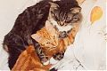
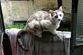
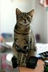
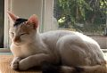
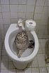

Doris Lessing
On Cats
When I was a kid, one of my favorite stories was Millions of Cats. In my mind’s eye that saffron yellow cover will always be, as will the tale of the poor farmer walking through the countryside with all those cats: Hundreds of cats, thousands of cats, millions and billions and trillions of cats. Because that is what I wanted, what I would have had if it were allowed or at all possible. The book satisfied my craving for abundant progeny, proved such far-flung fantasies could never work, and anyway, out in the Cat Barn there were at least twenty at a single time. I sat with them and pet them and named each; they were my cats. . . except the wild ones that weren’t.
On a farm there will always be cats and there will always be death. When, in the summer, the well-rested combine would come rotating those sharp canines through the fields, chopping down what it should and inevitably an animal it should not. Luckily, one quickly learns where there are cats there will always be more. So similarly, Doris Lessing’s graceful little book starts out: on her parents’ farm in Southern Rhodesia, where the dangers upon a feline’s life are increased ten-fold. Snakes and Owls and Hawks, Oh my! But the kicker was the startling image of her father gunning down a room full of innocent cats, cats whose numbers were way out of proportion. . . he didn’t want to do it; imagine if he did not: Hundreds of cats, thousands of cats, millions and billions a trillions of cats!
{kind=link}
Wisely Doris Lessing did not acquire a cat until she was settled, years later, in London. The cats who paw through the landscape of this book are of concise portraits only Lessing’s keen observations, combined with meticulous methods, can create. There is a genuine starkness, usually over doused with sentimentality, that makes this cat book not so saturated and cat-ty. You know the types: cute is their optimal metaphor. But this is Doris; who would I be kidding to think otherwise? Her sang-froid as a writer carries to cat ownership albeit cat subject-ship.
On Cats has dispersed within, gems for those who dote on small domestic fuzzy animals. Moments of insight where universal catness is aptly described through singular sketches. An odd thing happens; cat world and human world join. The intelligence of these beasts, masters in the art of observation, is given freely if we too can learn to sit quietly and watch. Subtle movements, twitches of the tail, meows and mirrts, blinks of the eyes—abbreviated or drawn, in succession or singular—that mean one thought, emotion, desire, expression or some other. It is as if we trade places: we are the cats and they, the quicker being.
This is my excuse; cats are a weakness. Like a man with too much sperm, implanting eggs wherever he shall go, I have left cats. Cats will be my legacy if my writing life fails me. Reading this slight sized book of Lessing’s intricate descriptions of the cats steady in her life, as well as street-cats who were not, I slip into the wordy images of those I’ve known. I flit around cat circumstances and my life of a ‘stone doomed to rolling.’ They do not mix. But yet I have persisted: I have collected fragments of cats, and sometimes regrettably, no whole.
Cat, the full being of cat, what I have come to understand cat as, is of such a great mystery and link to the animal that I can not condemn myself completely. Cats, cats, cats! What beautiful yellow eyes and slit pupils, what a regal and proud pose of front legs upright, the tail curled around feet like slippers, the grunting-twitter of a landing, the puzzled cock of the head, the intense attention where all is given over to leap and object of leap. Cats! Delicious cats! Beautiful divine cats! Clear-sighted and visionary, so selflessly they continue to share with me.
A recent decade of Meows (click photos for a closer look):
 Big Meow: R.I.P. What a cat! A cat of a cat! So calm, so chill except for that strange cupboard pounding he did with his paws, as if he were trying to frantically dash up them. Death by automobile. . .and Olive who I was with so shortly. I hear she is living on a Michigan farm.
 Lola: R.I.P. A little-lady. Beautiful and delicate. An unfortunate victim of kick or fall.
 Leo has not gone far from the piazza of his birth but had unwillingly traveled too much before then. His lion invocation suiting him more as age wears on.
 Micha was rescued from one of those ‘humane’ cages. She is still happily using The Playground as a litter box.
 Sofá Sofonisba: Meowser!!! Meow! Miaow!
{kind=link}
{kind=link}
{kind=link}
{kind=link}
{kind=link}
Miaaaow!
Bracciano, Italy
Febuary 2008
· · · · · · · · · · · · · · · · · · · ·